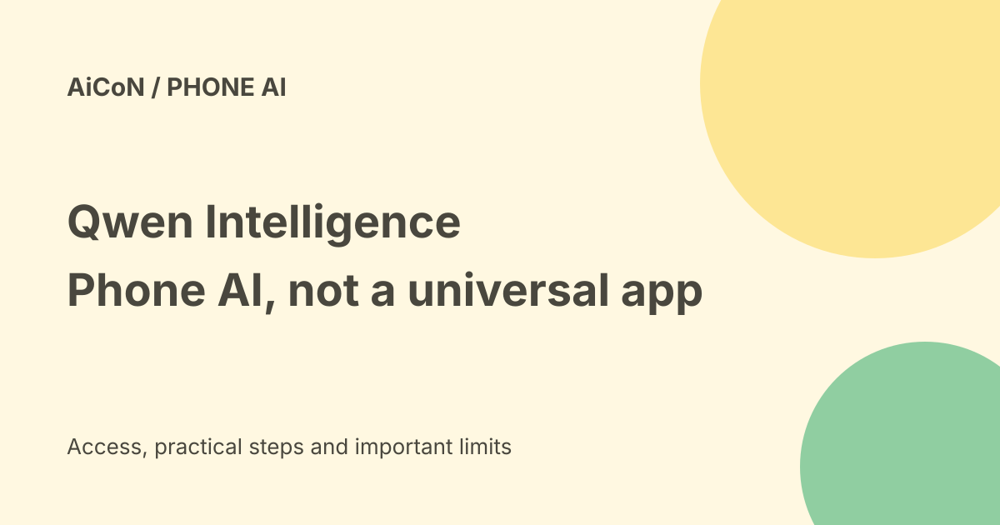

Qwen Intelligence: phone agents, with India and cloud limits
Qwen Intelligence is Alibaba's AI platform for phone makers. It helps them build agents that plan tasks, use apps and create images. HONOR is the first named partner. This is a phone-system integration, not a free app you can add to every Android phone.

What is Qwen Intelligence?
Alibaba describes a full smartphone AI platform built on Qwen models. Phone makers can use the whole platform or individual parts. It combines models, a modular agent platform and more specialised agents. An agent differs from a simple answer bot because it can plan steps and call tools to do work.
The first phase describes three agents: a planner that breaks work into steps, an app-use agent that carries out actions, and a creative agent for image generation and editing. The planner's travel example is a vendor scenario, not a booking we tested. A phone's exact capabilities depend on what its maker includes.
How does it use apps?
The Mobile-Use Agent follows an API-first route, with graphical-interface use as a fallback. An API is a service's structured connection; a graphical interface is the screen and controls a person normally taps. This is broader than a chatbot opening a search result.
Alibaba says the platform supports tool governance and evaluation. Those are product claims, not proof that every purchase, email or app action will ask for approval. Before allowing real actions, inspect permissions and confirmation settings on the actual phone. A successful demo does not establish safe handling of every account.
Which phones were announced?
Alibaba named HONOR as its first partner and said the Magic9 series and Robot Phone would be early devices. HONOR's official China announcement confirms that Magic9 launched and went on sale on 28 September 2026 with MagicOS 11 and an Alibaba collaboration. The earlier AiCoN post's upcoming-launch language is now out of date.
This does not establish a Robot Phone sale date or universal global availability. Check the exact model, market, software version and feature list. Similar phone names in different regions need not have identical services.
On-device does not mean entirely offline
Alibaba's architecture explicitly includes device-cloud coordination. Some model work is optimised for phones, while the complete system can balance local and cloud processing. Do not describe the platform as a guarantee that no data leaves the device.
Before using private messages, photos or work files, read the phone maker's data terms and each connected service's permissions. Ask which tasks need the cloud, what is stored and how to revoke access. Keep payment and sending actions behind review.
Price and India fit
Qwen Intelligence is a manufacturer platform, so there is no verified universal consumer app price here. A phone purchase, mobile plan, model usage or connected service may have separate costs. HONOR's China phone prices are not Indian offers, and converting them to rupees would not prove Indian availability or warranty.
We did not verify an India launch date, a Malayalam interface, an Indian app-compatibility list or an account-specific AI allowance. Indian readers should wait for an official local feature and terms page before buying hardware for this capability.
What does 91.8% accuracy mean?
Alibaba reports task accuracy up to 91.8% and flows exceeding 100 steps. These are vendor evaluations, not an independent test or a promise that 91.8% of your own tasks will succeed. The platform announcement describes several mobile-agent benchmarks with different task settings.
Real results depend on apps, permissions, network conditions and the task. A long flow can still fail at its last step. Test simple non-sensitive tasks and inspect the final result, rather than trusting a headline score.
A careful evaluation
- Check the official feature list for your exact phone and country.
- Read the usage allowance, payment terms and data settings before enabling an agent.
- Start with a read-only task using public information.
- Inspect which apps and tools it accesses, and whether local or cloud processing is used.
- For messages, purchases or bookings, review the final recipient, amount and details before approval.
We did not buy a phone, install software, connect accounts or test app control. These are research-based evaluation steps.
Frequently asked questions
Can I install it on any Android phone?
The announcement describes integration by phone makers, not a universal download.
Is every task processed offline?
No such claim is supported. Alibaba describes device-cloud coordination.
Is India access confirmed?
Not by the checked sources.
What changed since the earlier post?
This guide updates Magic9 from an upcoming launch to a confirmed China launch. It adds the device-cloud boundary, separates vendor scores from independent results and avoids promising Indian access or a free universal app.
Sources: Alibaba platform announcement · HONOR China launch announcement. Checked 8 October 2026.